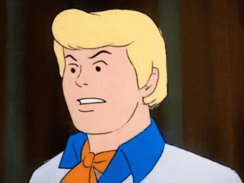

Fred

È il leader della Misteri Affini ed è lui che guida la "Mystery Machine". Ragazzo energico, deciso e sportivo, è
innamorato di Daphne e fa fatica ad esprimere i suoi sentimenti. Nelle prime serie, il suo
carattere è serio e disciplinato. La maggior parte delle volte è il più ragionevole e bilanciato del gruppo, impassibile
agli eventi apparentemente paranormali che gli si dispiegano davanti. Con il passare degli anni il suo carattere viene
ripreso e rimodellato dall'essere più coraggioso a mostrare segni di debolezza o a lasciarsi trasportare dalle emozioni,
siano di rabbia, angoscia, amore o paura. Anche il suo equilibrio iniziale viene scavalcato per dare spazio ad
atteggiamenti imprudenti, goffi e inconsapevoli di ciò che gli accade intorno.
H O M E